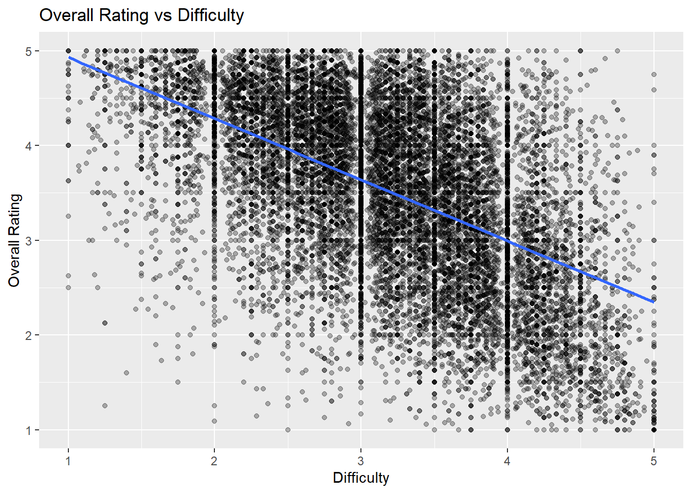

Factors Associated with Professor Ratings on RateMyProfessor
Summary
The goal of this project was to investigate which professor and university characteristics are associated with higher overall ratings on RateMyProfessor. In particular, I focused on variables such as difficulty, review count, interest, gender and university characteristics to better understand patterns in professor evaluations. I also compared statistical learning methods to determine which models best predict overall ratings.
The main insight from the analysis is that perceived difficulty has a strong negative relationship with overall rating. Professors who are rated as more difficult tend to receive lower overall ratings from students. In addition, the K-nearest neighbors (KNN) model slightly outperformed linear regression in predicting overall ratings, although both models achieved similar performance overall.
rmp <-read_csv("RateMyProfessor.csv")
Rows: 22038 Columns: 15
── Column specification ────────────────────────────────────────────────────────
Delimiter: ","
chr (7): hotness, rank, gender, race, discipline, uni_type, uni_control
dbl (6): id, overall, difficulty, review_count, interest, scientific_age
lgl (2): mentions_accent, mentions_ta
ℹ Use `spec()` to retrieve the full column specification for this data.
ℹ Specify the column types or set `show_col_types = FALSE` to quiet this message.
ggplot(rmp_train, aes(x = difficulty, y = overall)) +geom_point(alpha =0.3) +geom_smooth(method ="lm", se =FALSE) +labs(title ="Overall Rating vs Difficulty",x ="Difficulty",y ="Overall Rating" )
`geom_smooth()` using formula = 'y ~ x'

The figure shows a clear negative relationship between difficulty and overall rating. As perceived difficulty increases, overall ratings generally decrease. Although there is still noticeable variability among professors with similar difficulty levels, the overall downward trend suggests that difficulty is one of the most important factors associated with professor ratings in this dataset.
Motivation and Context
Student evaluations of professors are widely used in higher education and can influence course selection, faculty evaluations and perceptions of teaching quality. However, professor ratings may be affected by many different factors beyond teaching effectiveness alone, such as perceived course difficulty, student interest, class size and university characteristics. Understanding these relationships can provide insight into how students evaluate instructors and which factors are most strongly associated with positive ratings.
The dataset used in this project comes from RateMyProfessor and includes information about professor ratings along with university and demographic characteristics. The dataset contains 22,038 observations and 15 variables including overall rating, difficulty, review count, interest, gender, race, discipline and university type. Because the dataset contains real student evaluations across many universities and disciplines, it provides a useful setting for exploring patterns in professor ratings and applying statistical learning methods.
The main objective of this project is to investigate which characteristics are associated with higher overall professor ratings and to compare different statistical learning approaches for predicting those ratings. In particular, I focus on the relationship between difficulty and overall rating, while also examining the role of other variables such as review count, interest, gender and university characteristics. To better understand these relationships, I use both exploratory data analysis and statistical learning techniques including k-means clustering, linear regression and K-nearest neighbors.
readr | to import the CSV file data | dplyr | to massage and summarize data | ggplot2 | to create nice-looking and informative graphs | tidyr | to handle missing values and organizing data into a tidy format | purrr | to apply functions repeatedly, including computing within-cluster sum of squares for k-means clustering | recipes | to preprocess data and normalize predictors before modeling | parsnip | to specify linear regression and K-nearest neighbors models | workflows | to combine preprocessing steps and models into workflows | tune | to tune the hyperparameter for the KNN model | rsample | to split data into training and test sets | yardstick | to evaluate model performance using RMSE and R^2 | dials | to create and tune the grid of hyperparameter values for the KNN model | kknn | to fit the K-nearest neighbors regression model |
Data Description
The dataset used in this project is the RateMyProfessor dataset, which contains information about professors based on student evaluations and university characteristics. Each observation represents one professor, and the dataset contains 22,038 observations and 15 variables. Important variables include overall rating, difficulty, review count, student interest, gender, race, discipline, university type and university control.
The dataset was provided as an approved course dataset from Lab 4. The professor ratings originate from RateMyProfessor, while university-related variables are connected to publicly available education data from IPEDS/NCES.
The primary response variable in this project is overall professor rating. Predictor variables include difficulty, review count, interest, gender, discipline and university characteristics.
To evaluate model performance, the dataset was randomly divided into training and test sets using an 80/20 split. The training set was used for exploratory analysis and model fitting, while the test set was reserved for model evaluation. A fixed random seed was used to ensure reproducibility.
The RateMyProfessor dataset was already relatively clean so only minor data wrangling was required before analysis. Categorical variables such as gender, race, discipline, university type and university control were converted to factor variables so they would be handled correctly in summaries, visualizations and modeling procedures.
In addition, observations with missing values were removed when necessary for clustering and modeling analyses. The dataset was also divided into training and test sets using an 80/20 split to allow for model evaluation on unseen data.
All exploratory analysis in this section was performed using the training dataset. The primary goal of the analysis is to investigate which professor and university characteristics are associated with overall professor ratings.
To predict overall professor ratings, I used the K-nearest neighbors (KNN) regression model. KNN is a nonparametric statistical learning method that predicts outcomes based on nearby observations in the predictor space. Instead of fitting a single equation to the data, the model identifies the closest observations and averages their response values to make predictions.
The main hyperparameter in KNN is the number of neighbors, (k). Smaller values of (k) produce more flexible models with lower bias but higher variance, while larger values produce smoother models with higher bias and lower variance. Choosing an appropriate value of (k) helps balance model flexibility and stability.
The predictors used in the model were difficulty, review count and interest. Before fitting the model, the predictors were normalized so that variables measured on different scales would contribute equally to distance calculations.
# A tibble: 2 × 6
.metric .estimator mean n std_err .config
<chr> <chr> <dbl> <int> <dbl> <chr>
1 rmse standard 0.712 5 0.00309 pre0_mod0_post0
2 rsq standard 0.420 5 0.00429 pre0_mod0_post0
The K-nearest neighbors (KNN) model was evaluated using 5-fold cross-validation. The model achieved an average RMSE of approximately 0.708 and an (R^2) value of approximately 0.425. These results indicate that the model was able to explain a moderate amount of variation in overall professor ratings while maintaining relatively low prediction error.
Overall, the results suggest that variables such as difficulty, review count and student interest contain useful information for predicting professor ratings. In particular, difficulty appears to play an important role in student evaluations, which is consistent with the patterns observed during exploratory data analysis.
Conclusion
The goal of this project was to investigate which professor and university characteristics are associated with overall professor ratings on RateMyProfessor. Through exploratory data analysis and statistical learning methods, several important patterns were identified.
The exploratory analysis showed a clear negative relationship between difficulty and overall rating. Professors who were perceived as more difficult generally received lower ratings from students. In contrast, variables such as gender appeared to have little relationship with overall ratings, as the distributions for male and female professors were very similar.
To further investigate prediction performance, a K-nearest neighbors (KNN) regression model was used to predict overall ratings using difficulty, review count and student interest. The model achieved an RMSE of approximately 0.708 and an (R^2) value of approximately 0.425 using 5-fold cross-validation. These results indicate that the selected predictors contain useful information for predicting professor ratings, although a substantial amount of variation remains unexplained.
Overall, the results suggest that perceived course difficulty plays an important role in student evaluations and that statistical learning methods can provide useful insight into patterns within professor rating data.
Limitations and Future Work
Although the K-nearest neighbors (KNN) model was able to capture some important patterns in the data, there are still several limitations to this analysis. The model achieved moderate predictive performance, which suggests that a substantial amount of variation in professor ratings remains unexplained. Many factors that may influence student evaluations, such as teaching style, grading policies, course workload or class size, were not included in the dataset.
Another limitation is that the data comes from RateMyProfessor, which is based on voluntary student reviews. As a result, the ratings may not fully represent all students or all professors. Students who choose to leave reviews may have particularly strong positive or negative opinions, which could introduce bias into the data.
Future work could explore additional statistical learning methods and include more predictor variables to improve prediction accuracy. For example, tree-based methods or random forests may capture more complex relationships between variables. It may also be useful to investigate whether relationships differ across academic disciplines or university types.